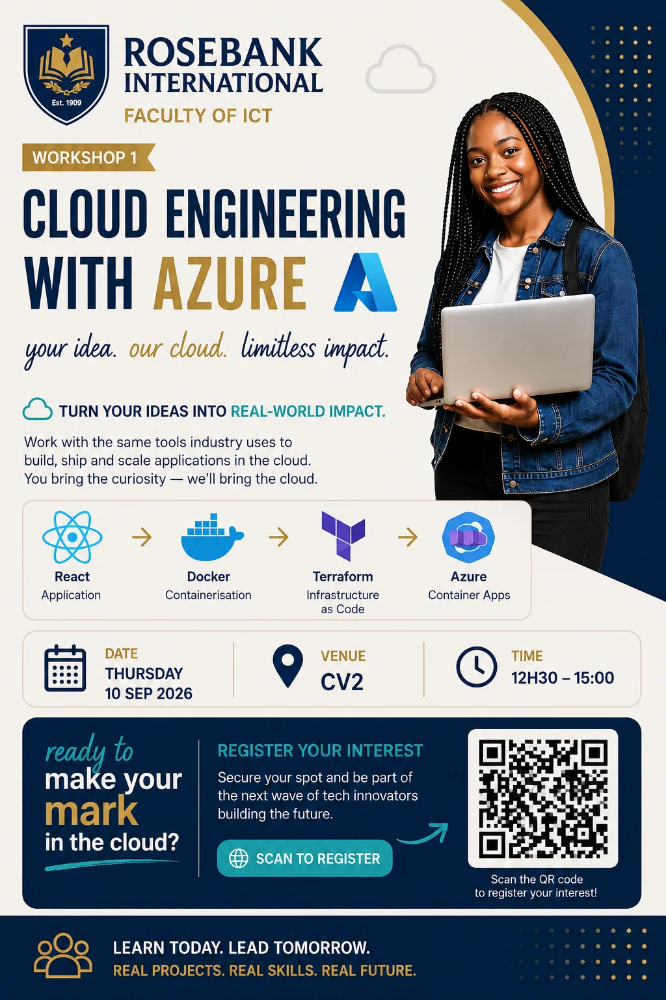

Workshop 1 · Azure
Building and deploying modern applications.
The Azure workshop introduced a development-to-deployment pathway: a React application, Docker containerisation, Terraform for infrastructure as code, and Azure Container Apps for cloud deployment.